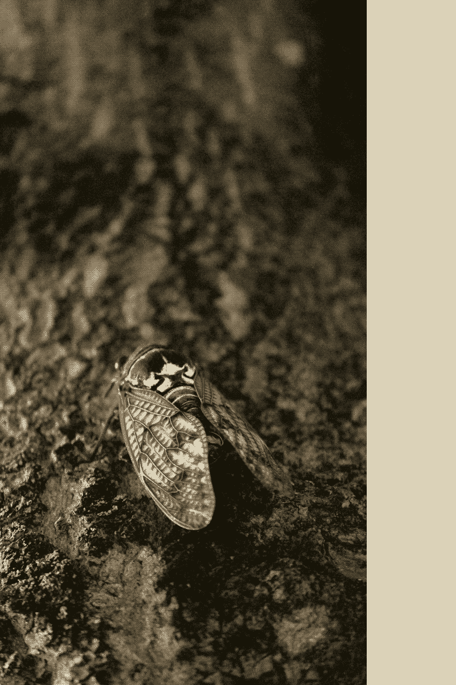
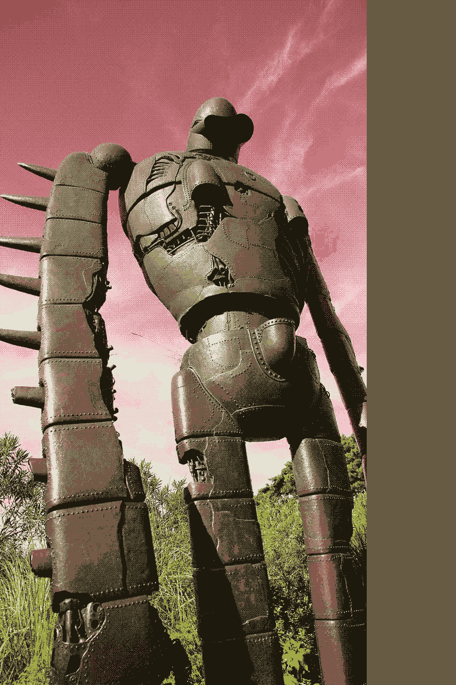
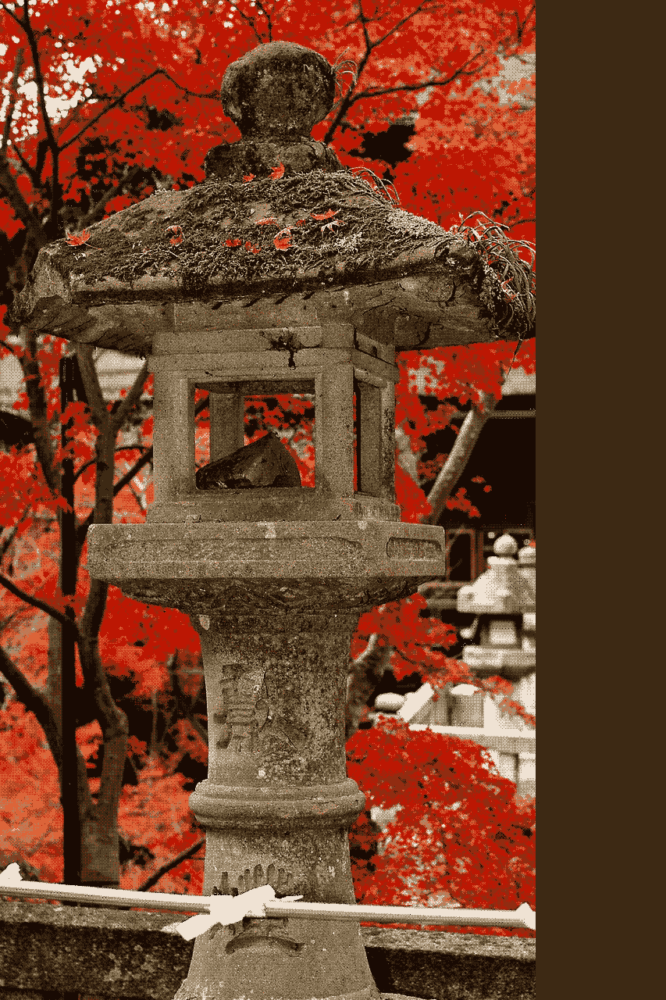

Born into a poor family in a developed capital, he lived happily until he was about 13 years old when he moved to Thailand.
He became more important to society and was learning how to cook in new styles. With determination and some luck, he is trying to help others in a extraordinary world. But with his eagerness and powers, there's nothing to stop him from accomplish all goals. He began writing and teaching others soon after, sparking his passion for literature.
He is currently enjoying the simpler life traveling throughout the Japanese countryside according to his Twitter followers votes. He feels like there's more watchful eyes than expected in this world. Luckily he has great companions at Hanaki Press to support him.

Tenmei no Kisei [ 寄生 ]
by Akira Matsuhisa
Genre: Sci-Fi
Harmful bacteria has destroyed the world as we know it.
The year is 2099. Kent is an icy place ruled by robots. Once glorious, Golden Gate Bridge is now jagged.
Clever teacher, DCI official Polly Plumb is humanity's only hope. Polly finds the courage to start a secret revolutionary organization called The Earthlings.
The fight is jeopardised when Polly is tricked by clumsy fishmonger, Master Kevin Giantbulb, and injures her elbow.
Armed with diligence and wit, The Earthlings try their best to save mankind, but can they defeat rude robots and restore Golden Gate Bridge to its former glory?
$6.99 $2.99
Hitomi de Dare [ 瞳でだれ ]
by Akira Matsuhisa
Genre: Fantasy
There's a witty new girl in Upper Boggington and she has everybody talking. Stunningly muscular and devastatingly pale, all the girls want her. However, Alice Thomas has a secret - she's a spiteful vampire.
Sonya Russell is a noble, beautiful girl who enjoys baking. She becomes fascinated by Alice who can stop elephants with her bare hands. She doesn't understand why she's so standoffish.
Her best friend, a brave giant called Joshua, helps Sonya begin to piece together the puzzle. Together, they discover the ultimate weapon - the red, warped blade.
When bodies start turning up all over Upper Boggington, Sonya begins to fear the worst. The giant urges her to report Alice to the police and she knows she should, so what's stopping her?
All becomes clear until a traveler from the future shows up and changes everything. Nothing is what it seems!
PRICE: $6.99
Kanashimi [ 悲しみ ]
by Akira Matsuhisa
Genre: Romance
William Herring is a hilarious and lovable orphan raised by a deranged and tight-fisted nun. Eventually he gets a job working as a police officer for the daring Lord Godfrey of Godfrey Heights. The unlikely couple rapidly succumb to a passionate passion.
On the day of their wedding, a greedy father escapes from the attic of Godfrey Heights and starts a fire. Believing that Lord Godfrey is dead, William flees from the church and wanders the breezy moors for days until he is rescued by a special swordsman.
However, although Lord Godfrey is blinded by the fire, he still breathes. Without William he becomes wild and wild. He turns to alcohol for comfort. The ghost of the father from the attic haunts him.
Meanwhile, thinking Lord Godfrey is dead, William accepts a marriage proposal from his saviour, the swordsman. However, one night he believes he can hear Lord Godfrey calling, "William, where are you? William come home!" and he returns to Godfrey Heights.
On William's return, he finds Lord Godfrey drunk and without sight. Mistaking him for the ghost of the greedy father, he attacks him with a candlestick and William Herring dies.
As he attends to the body, Lord Godfrey realises what he has done. Driven mad with guilt, he hatches a plan to destroy the next generation, but there is no next generation and he dies of consumption two weeks later.
PRICE: $6.99
Taita [ たいた ]
by Akira Matsuhisa
Genre: Horror
Enormous living origami have been turning up all over the west coast of Mexico and the inhabitants are scared. Ten murders in ten weeks, all committed with a arrow, and still nobody has a clue who the snooty killer is.
Prof Carla Pitt is a stunning and considerate homemaker with a fondness for life. She doesn't know it yet but she is the only one who can stop the sinister killer.
When her grandfather, Phillip England, is kidnapped, Prof Pitt finds herself thrown into the centre of the investigation. His only clue is a ribbed rock - the magatama.
She enlists the help of an admirable shopkeeper called Elizabeth Gloop.
Can Gloop help Pitt overcome her Vaseline addiction and find the answers before the smelly killer and his deadly arrow strike again?
PRICE: $6.99

Handan [ 判断 ]
by Akira Matsuhisa
Genre: Crime Fiction
Mangled eyelashes have been turning up all over Devon and the inhabitants are scared. Ten murders in ten weeks, all committed with a razor, and still nobody has a clue who the snotty killer is.
Master Matthew Blunder is a weak and charming police officer with a fondness for booze. He doesn't know it yet but he is the only one who can stop the brutal killer.
When his nephew, Mark Vader, is kidnapped, Master Blunder finds himself thrown into the centre of the investigation. His only clue is a bendy gun.
He enlists the help of a popular navigator called Andrew Godfrey.
Can Godfrey help Blunder overcome his roulette addiction and find the answers before the arrogant killer and his deadly razor strike again?
PRICE: $6.99

Ni Owari [ に終わり ]
by Akira Matsuhisa
Genre: Sci-Fi
An unstoppable virus has destroyed the world as we know it.
The year is 2033. Devon is a devastated place ruled by right wing extremists. Once glorious, the Sistine Chapel is now buried.
Lovable swordsman, Sir Boris Blunder is humanity's only hope. Boris finds the courage to start a secret revolutionary organization called The Earthlings.
The fight is jeopardised when Boris is tricked by mean painter, Prof Garth Platt, and injures his eyelash.
Armed with diligence and an antidote, The Earthlings try their best to save mankind, but can they defeat malicious right wing extremists and restore the Sistine Chapel to its former glory?
PRICE: $6.99
Bakeneko [ 化け猫 ]
by Akira Matsuhisa
Genre: Horror
The magical, English town of Truro holds a secret.
Steve McCallister has the perfect life working as a doctor in the city and laughing with his gracious girlfriend, Heather Thornhill.
However, when he finds a solid knife in his cellar, he begins to realise that things are not quite as they seem in the McCallister family.
A Christening leaves Steve with some startling questions about his past, and he sets off to cold Truro to find some answers.
At first the people of Truro are cute and special. He is intrigued by the curiously cute scout, Maud Kowalski. However, after she introduces him to hard roulette, Steve slowly finds himself drawn into a web of jealousy, burglary and perhaps, even abduction.
Can Steve resist the charms of Maud Kowalski and uncover the secret of the solid knife before it's too late, or will his demise become yet another Truro legend?